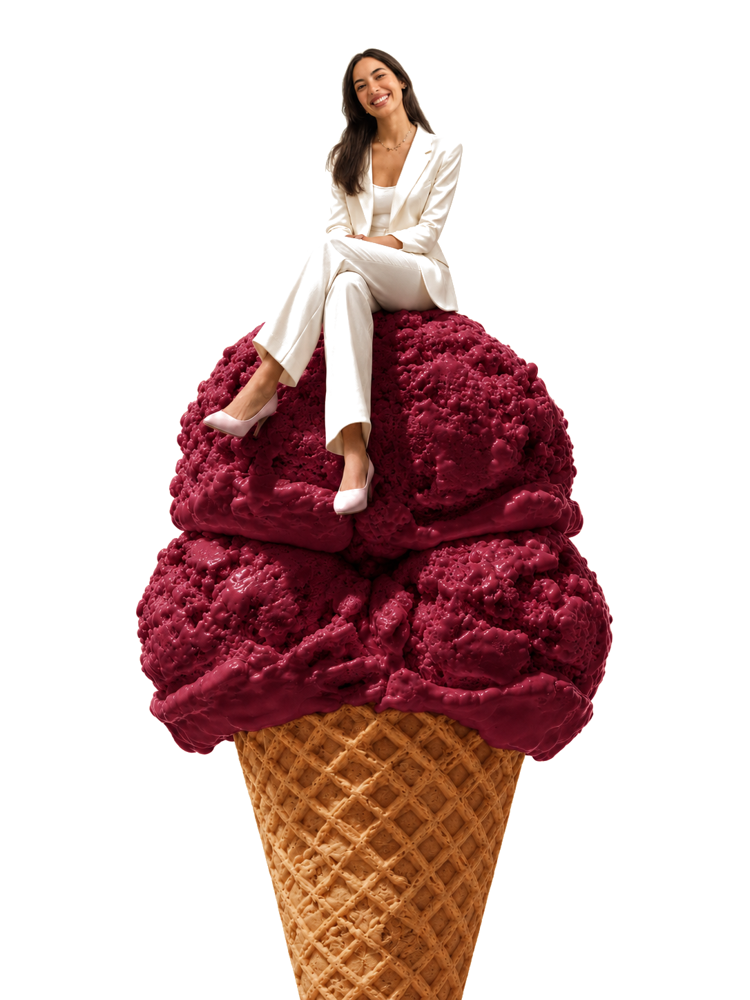

{{ st.title }}
{{ st.text }}
Tenho 25 anos e sou de Vila do Conde — cidade de naus quinhentistas e rendas de bilros. Licenciei-me em Gestão e fiz o mestrado em Gestão de Marketing no IPAM, onde terminei como melhor aluna do curso, com 19/20, e uma tese defendida com 20/20.
O que faço vive no cruzamento de três coisas que raramente andam juntas — e é aí que está a diferença.
“Why? But why?”
{{ st.text }}
O que eu queria ser
Investigação
Fui Marketing Researcher no IPAM. Antes de criar, preciso de entender — por isso tenho 6 artigos científicos em publicação nas áreas de comportamento do consumidor, estratégia de marketing e sustentabilidade.
É a investigação que impede o trabalho criativo de ser palpite. Dados, entrevistas e leitura de mercado primeiro; decisões depois.
Ver a investigação →More than marketing
A não ser que seja dentro da sua própria gelataria.

As credenciais · a minha caixa de ferramentas
Formação
{{ credNote }}
Línguas · toca para ouvir
Competências
Desde pequena que a minha palavra favorita era "não quero". Não quero aquela comida. Não quero aquela roupa. Não quero o que todos chamam de normal. Vila do Conde é cidade de naus — e daí veio o nome: uma nau que não quer o caminho já traçado.
É esse o filtro de tudo o que faço aqui: se já existe igual, não interessa. Nem para mim, nem para a tua marca.